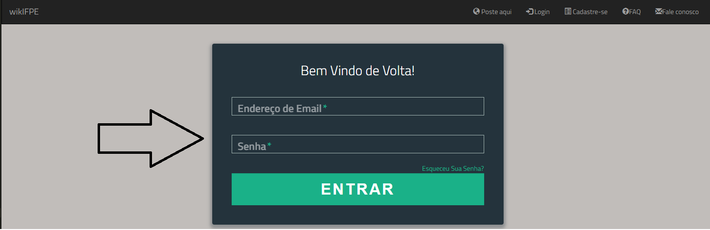

FAQ - Perguntas Frequentes
Preciso de uma conta para postar no WikiFPE?
Sim, é necessária uma conta para poder postar conteúdo, e ter um controle do que e por quem está sendo postado.
Posso postar sobre qualquer coisa?
Sim, desde que seja algo relacionado ao seu CAMPUS, Por favor não poste algo que não seja apropriado para todas as idades.
Profanidades, conteúdo adulto, preconceitos, ódio, instruções anti-sociais, drogas, racismo e instruções para atividades ilegais ou que tenham a intenção explícita de causar ferimentos a pessoas.
Preciso ser estudante / professor / funcionário do IFPE para participar do WikiFPE?
Sim, pois o mesmo é voltado apenas para a Instituição
Como faço uma postagem no site?
PASSO 1 - Primeiro, é necessário que possua uma conta em nosso site, clique em Cadastre-se e crie rapidamente sua conta.
PASSO 2 - Após a criação, entre com sua conta no site para acessar o seu perfil.

PASSO 3 - Volte para a tela inicial e clique em "poste aqui".
PASSO 4 - Insira um Título e o conteúdo de sua postagem em "Diga aqui como fazer ...", após clicar em enviar sua postagem estará disponível no site.

Quaisquer dúvidas que não estejam respondidas no FAQ, não hesite em entrar em contato conosco através do "Fale Conosco".